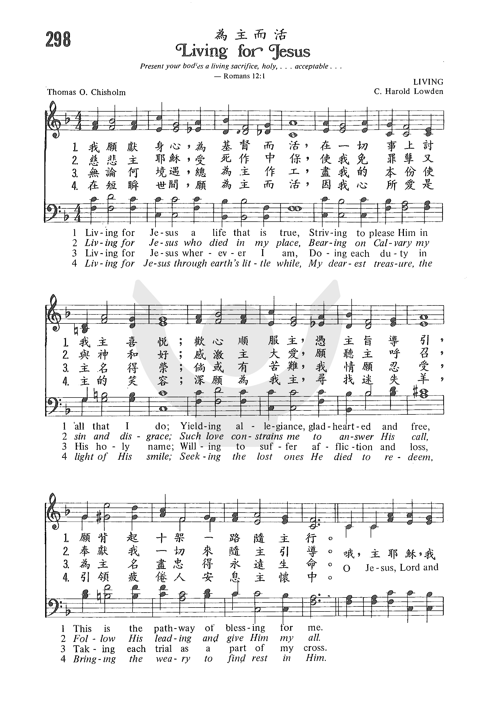
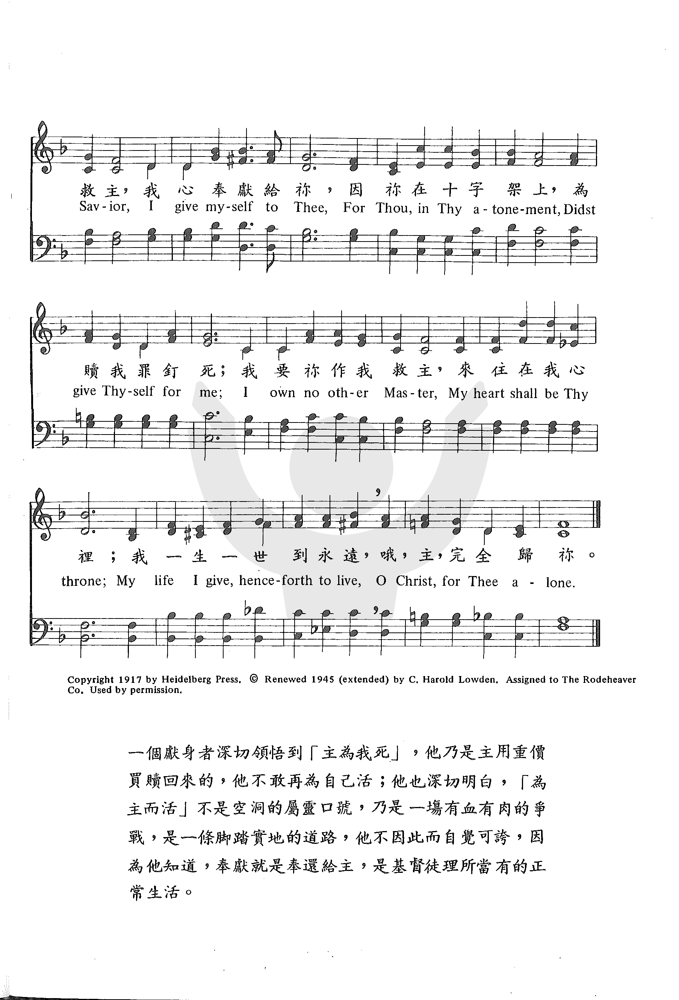
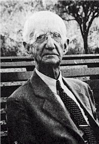

1236
Living For Jesus _Thomas
O. Chisholm
为主而活
|
|
|
|
1. Living for Jesus, a life that is true,
Striving to please Him in all that I do;
Yielding allegiance, glad-hearted and free,
This is the pathway of blessing for me.
Refrain:
O Jesus, Lord and Savior, I give myself to Thee,
For Thou, in Thy atonement, didst give Thyself for me;
I own no other Master, my heart shall be Thy throne;
My life I give, henceforth to live, O Christ, for Thee alone.
2. Living for Jesus Who died in my place,
Bearing on Calv’ry my sin and disgrace;
Such love constrains me to answer His call,
Follow His leading and give Him my all.
3. Living for Jesus, wherever I am,
Doing each duty in His holy Name;
Willing to suffer affliction and loss,
Deeming each trial a part of my cross.
4. Living for Jesus through earth’s little while,
My dearest treasure, the light of His smile;
Seeking the lost ones He died to redeem,
Bringing the weary to find rest in Him.
Source: 50
Favorites: and July 2013 index of supplement to Evening Light Songs #29
|
“298b 為主而活 LIVING FOR JESUS298 為主而活
我願獻身心，為基督而活，
在一切事上討我主喜悅;
歡心順服主，憑主旨導引，
願背起十架一路隨主行。
哦，主耶穌，我救主，我心奉獻給祢，
因祢在十字架上，為贖我罪釘死；
我要祢作我救主，來住在我心裡；
我一生一世到永遠，
哦，主，完全歸祢。
慈悲主耶穌，受死作中保，
使我免罪孽又與神和好；
感激主大愛，願聽主呼召，
奉獻我一切來隨主引導。
哦，主耶穌，我救主，我心奉獻給祢，
因祢在十字架上，為贖我罪釘死；
我要祢作我救主，來住在我心裡；
我一生一世到永遠，
哦，主，完全歸祢。
無論何境遇，總為主作工，
盡我的本份使主名得榮；
倘或有苦難，我情願忍受，
為主名盡忠得永遠生命。
哦，主耶穌，我救主，我心奉獻給祢，
因祢在十字架上，為贖我罪釘死；
我要祢作我救主，來住在我心裡；
我一生一世到永遠，
哦，主，完全歸祢。
在短瞬世間，願為主而活，
因我心所愛是主的笑容；
深願為我主，尋找迷失羊，
引領疲倦人安息主懷中。
哦，主耶穌，我救主，我心奉獻給祢，
因祢在十字架上，為贖我罪釘死；
我要祢作我救主，來住在我心裡；
我一生一世到永遠，
哦，主，完全歸祢。
|
|
https://www.zanmeishige.com/tab/25666.html?songbook=1&index=298


|
|
|
|
 教會聖詩
298 為主而活 Living for Jesus 詞 Thomas O. Chisholm
教會聖詩
298 為主而活 Living for Jesus 詞 Thomas O. Chisholm
-
- Living For Jesus Eden Symphony Orchestra
1236
Living For Jesus 为主而活
|
Short Name: |
Thomas O. Chisholm |
|
Full Name: |
Chisholm, Thomas O. 1866-1960 |
|
Birth Year: |
1866 |
|
Death Year: |
1960 |
Thomas O. Chisholm

was born in Franklin,
Kentucky in 1866. His boyhood was spent ona farm and in teaching district
schools. He spent five years as editor of the local paper at Franklin. He
was converted to Christianity at the age of 26 and soon after was business
manager and office editor of the "Pentecostal Hearld" or Louisville, Ky. In
1903 he entered the ministry of the M. E. Church South. His aim in writing
was to incorporate as much as Scripture as possible and to avoid flippant or
sentimental themes.
Dianne Shapiro, from
"The Singers and Their Songs: sketches of living gospel hymn writers" by
Charles Hutchinson Gabriel (Chicago: The Rodeheaver Company, 1916)
==============================
Signed letter from Chisholm dated 9 August 1953 located in the DNAH
Archives.
Notes
Composer C. Harold
Lowden stated the following about this hymn:
In 1915 I wrote a
"light and summery" type of gospel song entitled 'The Sunshine Song"
for children's services. It became quite popular, and many pastors
wrote to me that the music should be saved, and more general words
wedded to it. I came across a copy of it in my files in 1917 and
played it over. The rhythm and tempo suggested the words "Living for
Jesus." . . . I decided to ask T. O. Chisholm to write the words. I
mailed him a copy of the music and suggested the title and the type
of refrain which I thought it deserved. In a day or so, Mr. Chisholm
returned it to me, saying he didn't have the slightest idea as to
the method used in writing words to music. I sent the material back
to him immediately, telling him I believed God had led me to select
him, and suggesting that he permit God to write the poem. Within a
couple of weeks he had completed the writing of the words.
Thus the author,
Thomas O. Chisholm (b. Franklin, KY, 1866; d. Ocean Grove, NJ, 1960),
wrote "Living for Jesus" in 1917. Although he had little formal
education, Chisholm served at various times as a teacher, editor, and
pastor. He also wrote more than twelve hundred poems and hymn texts.
Chisholm's accomplishments included being associate editor of his
hometown newspaper, The Franklin Advocate, and
editor of the Pentecostal Herald. He was ordained
in the Methodist Church but served only briefly as a pastor in
Scottsville, Kentucky, because of poor health. After that he sold life
insurance in Winona Lake, Indiana, and Vineland, New Jersey. His
devotional poetry and hymn texts were published primarily in religious
periodicals.
His wrote his text to fit Lowden's tune in four stanzas and a refrain.
Stanza 3 in the Psalter Hymnal collates
phrases from stanzas 3 and 4 of Chisholm's original text. The text and
tune were first published together in Uplifting Songs (1917),
a hymnal compiled by Lowden and Rufus W. Miller.
This is a hymn of
total consecration and dedication in which we commit to "living for
Jesus" in all that we do (st. 1) and wherever we are (st. 3) in response
to Christ's sacrifice (st. 2; refrain). "Living for Jesus" is well known
in the Christian Reformed Church as the theme song of the Calvinist
Cadet Corps, a church-related organization for young boys.
Liturgical Use:
Most often as a post-sermon hymn; also as a hymn of dedication or
commitment at a suitable place in the worship service.
--Psalter Hymnal
Handbook
Read Less
Tune Information
|
Title: |
[Living for Jesus a life that is true] (Lowden) |
|
Composer: |
C. Harold Lowden (1915) |
|
Meter: |
10.10.10.10 with refrain |
|
Incipit: |
34352 34123 32321 |
|
Key: |
F
Major |
|
Copyright: |
Public Domain |
|
Short Name: |
C. Harold Lowden |
|
Full Name: |
Lowden, C. Harold, 1883-1963 |
|
Birth Year: |
1883 |
|
Death Year: |
1963 |
Hymnary.org does not have biographical information about this person.
Notes
LIVING FOR JESUS is a
gospel hymn tune distinguishable by its dactylic rhythm for the stanzas
and its straightforward iambic refrain. The guitar chords avoid some of
the chromaticism of the original harmony; when using guitar, do not use
keyboard. Singing the refrain only once–at the end of stanza 3–will
constitute a fine climax. Singers may want to observe a ritardando or
a fermata in the final phrase of the
refrain.
C. Harold Lowden (b.
Burlington, NJ, 1883; d. Collingwood, NJ, 1963) wrote his first songs
when he was only twelve years old. He continued to write hymns for the
rest of his life and edited a number of hymnals. A musical editor for
the Evangelical and Reformed Church board, Lowden taught music at the
Bible Institute of Pennsylvania (now Philadelphia College of Bible). He
capped his career by serving for twenty-eight years, until his
retirement in 1961, as minister of music of the Linden Baptist Church in
Camden, New Jersey.
--Psalter Hymnal
Handbook, 1988
“Living for Jesus”
Thomas O. Chisholm
The Faith We Sing, No. 2149
Living for Jesus a life that is true, striving to please him in all that I
do,
yielding allegiance, glad-hearted and free, this is the pathway of blessing
for me.
O Jesus, Lord and Savior, I give myself to thee, for thou, in thy atonement,
didst give thyself for me;
I own no other master, my heart shall be thy throne, my life I give,
henceforth to live,
O Christ, for thee alone.
A native of a small Kentucky town, Thomas Obadiah Chisholm (1866-1960)
lacked formal education. Nevertheless he became a teacher at age 16 and
associate editor of his hometown weekly newspaper, the Franklin
Advocate, at age 21.
In 1893 Chisholm became a Christian through the ministry of Henry Clay
Morrison, the founder of Asbury College and Seminary, Wilmore, Ky. Morrison
persuaded Chisholm to move to Louisville where he became editor of the Pentecostal
Herald. Though he was ordained a Methodist minister in 1903, he served
only a single, brief appointment at Scottsville, Ky., due to ill health.
Chisholm relocated his family to Winona Lake, Ind., to recover, and then in
1916 to Vineland, N.J., where he sold insurance. By the time of his
retirement he had written over 1,200 poems, 800 of which were published in a
number of periodicals such as The
Sunday School Times, Moody
Monthly and Alliance
Weekly. Many of these were set to music.
|
 |
|
Thomas Obadiah Chisholm, author of “Living for Jesus” |
The late hymnologist William J. Reynolds noted that this gospel song started
with the tune:
“C. Harold Lowden [1883-1963] composed the tune about 1915, and it was first
published under the title ‘Sunshine Song’ in a Children’s Day Service that
he wrote. Early in 1917, while preparing a collection of hymns for
publication, he came across this song and was impressed that the tune needed
a stronger text. He substituted ‘Living for Jesus’ for the original title
and sent the tune to Thomas O. Chisholm, then living at Winona Lake, Indiana
for a new text.”
Even though Chisholm protested that he had never written a text for a
pre-existing tune, Lowden insisted, telling the author that he “believed God
had led me to select him” to provide a text for this music. Within a short
time, Chisholm returned the tune with four stanzas and a refrain.
The hymn appeared as a separate song sheet in the spring of 1917, and was
used at a number of youth conferences that summer. More than a million
copies of the hymn were sold in this form. By the fall the hymn appeared in
a collection compiled by Lowden and Rufus W. Miller entitled Uplifting
Songs.
As in most gospel songs, the theme may be found in the refrain. The refrain
stresses personal commitment to Jesus Christ because of what he did for us
through his atonement. This commitment is total as the singer “own[s] no
other master” than Christ, who sits on the “throne” of our heart.
The stanzas provide further insight as to the nature of this commitment. In
stanza one, we “strive . . . to please him in all that [we] do” and offer
“allegiance, glad-hearted and free.”
Stanza two states that we are responding to Christ’s atonement on Calvary
and that “such love constrains [us] to answer his call.” Stanza three
emphasizes that it is our “duty . . . to suffer affliction or loss . . .
[as] a part of [our] cross.”
The final stanza points us toward the ultimate goal of heaven as we live
“through earth’s little while.” We claim “the light of his smile” as our
“dearest treasure.” Our task is to “bring . . . the weary to find rest in
Christ.”
Like most gospel songs, the message is exclusively Christological. Our
mission is to bring the lost ones to Christ and, in doing so, submit totally
to him. Hymnologist Kenneth Osbeck suggests that the biblical basis for this
song may be found in the famous passage, Romans 12:1-2, beginning with “I
beseech you therefore, brethren, by the mercies of God that ye present your
bodies a living sacrifice. . . .”
Chisholm once stated his purpose for writing songs: “I have sought to be
true to the Word, and to avoid flippant and catchy titles and treatment. I
have greatly desired that each hymn or people might have some definite
message to the hearts for whom it was written.”
Chisholm, resisting writing a text to a pre-existing tune, had protested
that “he didn’t have the slightest idea as to the method used in writing
words to music.” The result, however, was a song by the author second in
popularity only to his renowned “Great Is Thy Faithfulness.”
Dr. Hawn is professor of sacred music at Perkins School of Theology.
https://www.umcdiscipleship.org/resources/history-of-hymns-living-for-jesus-pledges-full-commitment-to-christ
LIVING FOR JESUS"
"Walk worthy of the Lord unto all pleasing, being fruitful in every good work…" (Col.
1.10)
INTRO.:
A song which exhorts us to walk or live worthy of the Lord is "Living For Jesus"
(#552 in Hymns
for Worship Revised and #102 in Sacred
Selections for the Church). The text was written by Thomas Obadiah Chisholm
(1866-1960). Chisholm authored many hymn poems, one of the more famous being "O
To Be Like Thee." The tune (Living) was composed by Carl Harold Lowden, who was
born on Oct. 12, 1883, in Burlington, NJ. Learning the violin as a child,
he played in a local orchestra. At the age of twelve, he began producing songs
and sold his first one to the Hall-Mack Co., where he was later employed. For
twelve years, he was musical editor for the Evangelical and Reformed Church
Board, now the United Church of Christ, but resigned this position to go into
business for himself at Camden, NJ. In addition to his business interests, he
served as song director for 28 years with the Linden Ave. Baptist Church in
Camden.
Also, Lowden was a music teacher for eight years at the Bible Institute of
Pennsylvania, now the Philadelphia College of the Bible. Around 1915, he
produced this melody and first published it as a "light and summery type of
gospel song" with his own words under the title "Sunshine Song" for a special
children’s service. Then early in 1917, he came across a copy of it in his files
while he was preparing a collection of hymns for publication. Feeling that the
music needed a better text, he sent it to Chisholm, then living at Winona Lake,
IN, with the suggested title, "Living for Jesus," and asked him to provide
words. Chisholm returned it with the note that he had never made a poem to order
and did not think that he could do so now. However, Lowden insisted that he try.
Impressed with Lowden’s zeal, Chisholm shortly sent it back with four stanzas
and a refrain. The hymn was published by the composer in the spring of 1917 on
single sheets and first used at a number of summer youth conferences in that
form. Later that same year, it was included in Uplifting
Songs, compiled by Lowden and Rufus W. Miller, and published by Heidleberg
Press. When the copyright was renewed in 1945, it was assigned to The Rodeheaver
Co. During his lifetime, Lowden was credited with a number of hymn tunes and
edited many songbooks. Retiring in 1961 from both his business and his work as a
church music director in which he had labored continuously for sixty years, he
died at Collingswood, NJ, on Feb. 27, 1963.
Among hymnbooks published by members of the Lord’s church during the twentieth
century for use in churches of Christ, the song appeared in the 1978 Hymns
of Praise edited by Reuel Lemmons. Today it may be found in
the 1971 Songs
of the Church, the 1990 Songs
of the Church 21st C. Ed., and the 1994 Songs
of Faith and Praise all edited by Alton H. Howard; the
1978/1983 Church
Gospel Songs and Hymns edited by V. E. Howard; and the 1992 Praise
for the Lord edited by John P. Wiegand; in addition to Hymns
for Worship, and Sacred
Selections.
The hymn suggests several ideas that are involved in seeking to live for Jesus.
I. Stanza 1 points out that living for Jesus means being true to Him
"Living for Jesus a life that is true, Striving to please Him in all that I do;
Yielding allegiance, gladhearted and free, This is the pathway of blessing for
me."
A. In order to do this, we must strive to please Him in all that we do: 1
Thess. 4.1
B. We must also yield our allegiance to Him; just as we pledge allegiance to
the flag of our country, we should confess our allegiance to Christ: Matt.
10.32-33
C. And those who do these things will have His blessings in their lives: Eph.
1.3
II. Stanza 2 points out that living for Jesus means remembering Him who died for
us
"Living for Jesus who died in my place, Bearing on Calvary my sin and disgrace;
Such love constrains me to answer His call, Follow His leading and give Him my
all."
A. We need to remember that Jesus bore on Calvary our sin and disgrace: Rom.
5.8
B. And thus remembering, we will be constrained by our love to answer His call
to salvation in Him which comes through the gospel: 2 Thess. 2.13-14
C. Furthermore, answering His call demands that we give Him our all: Mk. 12.30
III. Stanza 3 points out that living for Jesus means serving Him wherever we are
"Living for Jesus wherever I am, Doing each duty in His holy name;
Willing to suffer affliction and loss, Deeming each trial a part of my cross."
A. Of course, whatever service we perform must be in His name or by His
authority: Col. 3.17
B. This service means being willing to suffer affliction and loss: 2 Cor.
4.10-13
C. But it will help us to realize that whatever affliction and loss that we are
called on to suffer is simply part of the cross that Jesus calls us to bear:
Matt. 16.24
IV. Stanza 4 points out that living for Jesus means obeying Him for all our
lives
"Living for Jesus through earth’s little while, My dearest treasure, the light
of His smile;
Seeking the lost ones He died to redeem, Brining the weary to find rest in Him."
A. If we truly do obey Him, we shall have His approval as symbolized by a
smile: Rev. 3.8-10
B. One way in which we need to obey Him is to be seeking the lost ones He died
to redeem–Jesus Himself came to seek and save the lost: Lk. 19.10, 1 Tim. 1.15
C. And as His followers, we must recognize our responsibility to bring the
weary to find rest in Him by teaching others also: 2 Tim. 2.2
CONCL.:
The chorus goes on to make a pledge to the Lord Himself that we will live for
Him.
"O Jesus, Lord and Savior, I give myself to Thee,
For Thou in Thy atonement Didst give Thyself for me;
I own no other Master, My heart shall be Thy throne;
My life I give, henceforth to live, O Christ, for Thee alone."
And we need to realize that if we want to live with the Lord eternally, then as
long as our lives continue on earth, our goal each day should be "Living For
Jesus."
https://hymnstudiesblog.wordpress.com/2008/09/10/quotliving-for-jesusquot/